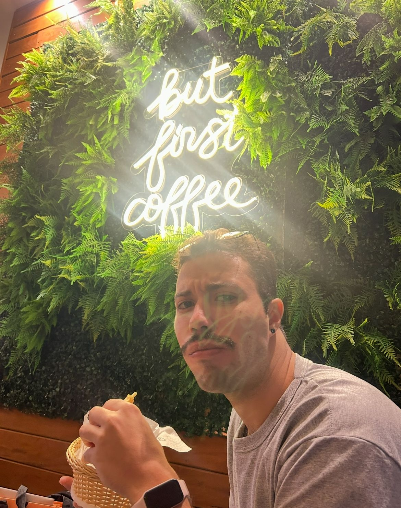
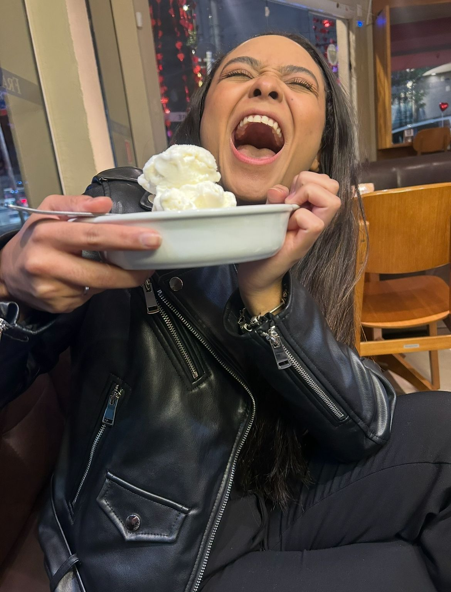
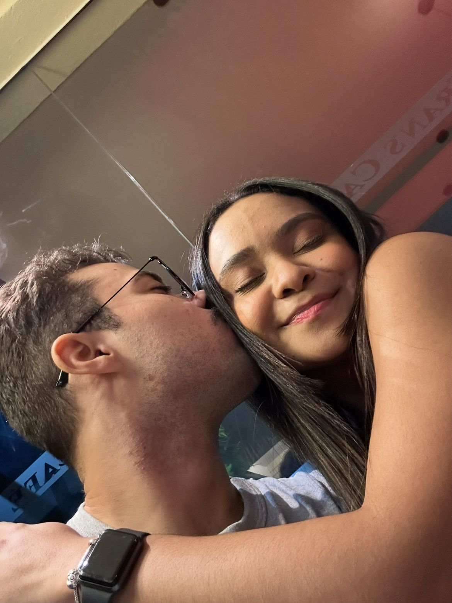

Essa foi a nossa primeira foto oficialmente, jogando um beachzinho meo!
OBS: Por motivos não legais, tive que cortar a imagem, mas até que ficou boa
kkkkk.
Nossas memórias ✈️📸
Um feed dos nossos melhores momentos
Isso foi no Jardim da Liberdade. Eu lembro que você não gostou que eu tirei essa foto, mas eu achei ela linda. Ainda bem que não apaguei.
Esse foi o dia que eu conheci seus pais, de uma maneira não tão legal kkkkkk. Mas foi um dia bacana, conversamos muito sobre nossos planos um com o outro. O outro dia foi terrível, a dor de barriga depois do japa cobrou.
Sabe que dia foi esse? Foi o dia que você me botou um prazo para te pedir em namoro kkkkkk. Também foi a nossa primeira viagem juntos, e nosso primeiro perrengue juntos também. Foi nesse dia que descobri que te amava.
Olha só, não é que o dia de te pedir em namoro chegou? kkkkk Quase no limite do prazo, mas chegou. A foto ficou linda, mas os bastidores do antes e do depois, só sabe quem estava lá kkkkkk.
Eu simplesmente amo essa fotinha do nosso primeiro rolê na Paulista/museu juntos, coisas que temos que repetir.
HAHAHAHA esse foi o dia que fomos pela primeira vez numa parrilla (só carne de qualidade). Obviamente você não curtiu muito né kkkkkkk. Foi o dia que a gente decidiu visitar as melhores hamburguerias de SP (ficou com Deus).

Namorados também fazem a noite das meninas, por que não, né? É muito bom fazer skin care com meu amor kkkkkkk.



Nosso primeiro Dia dos Namorados. Fomos a uma cafeteria depois do trabalho. A primeira foto você tentou me sacanear, tirando foto comendo. Na segunda, você não contava que eu ia entrar na brincadeira... pena que você foi mais rápida e saiu elegante na foto kkkkkkkkk. E por fim, essa fotinha da gente juntinhos. Foi o dia que te dei seu berloque.
Pra mim, isso define MUITO como foi nossa primeira viagem juntos. Eu amei TODOS os momentos, amei o clube, amei conhecer Ilhabela e principalmente, eu amei sua companhia.
Esse foi o dia que nós descobrimos que o Bigodinho para de reclamar do pagode e começa a batucar a partir da primeira cerveja kkkkkkkk.
E por fim, mas não menos importante, o dia do meu amor. Esse foi um rolê muito incrível, foi a primeira vez que vi toda sua galera reunida. A foto não ficou das melhores, mas sua carinha pedindo carinho e atenção me pegou muito kkkkkkk.